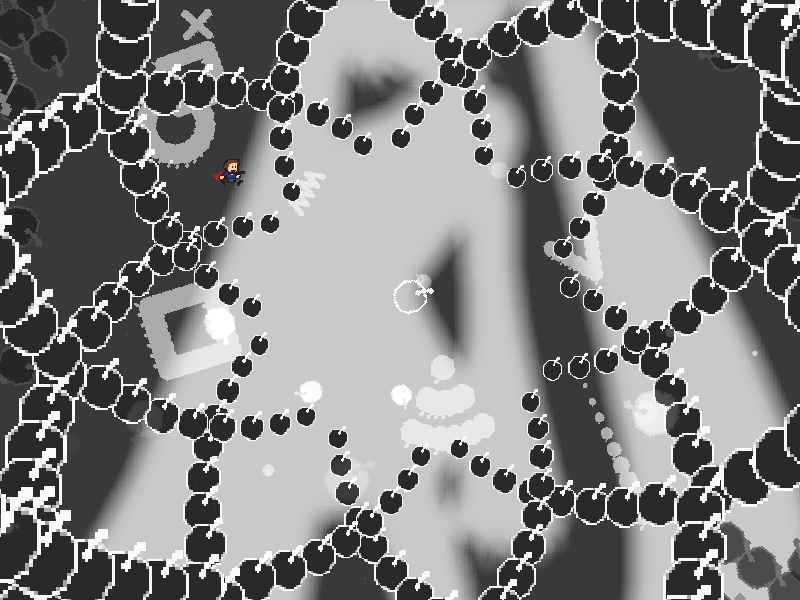
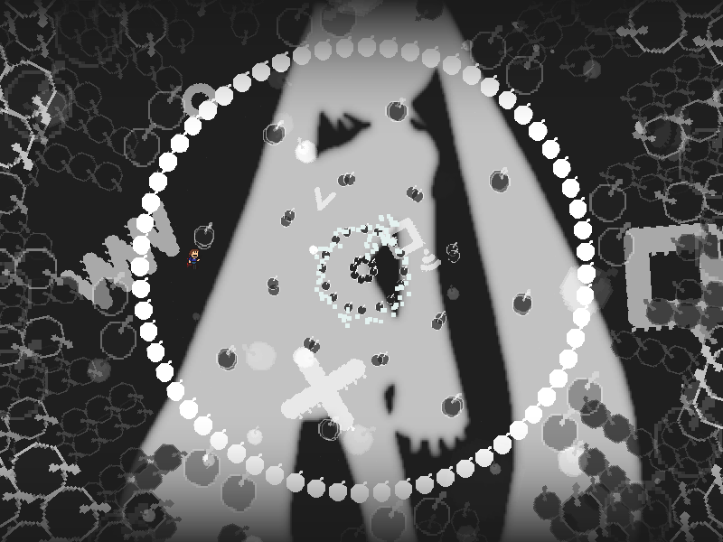
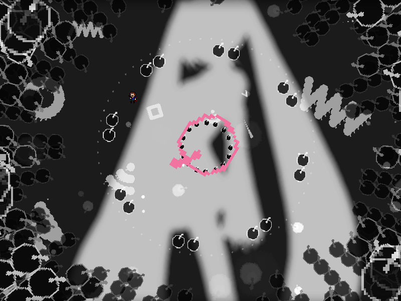
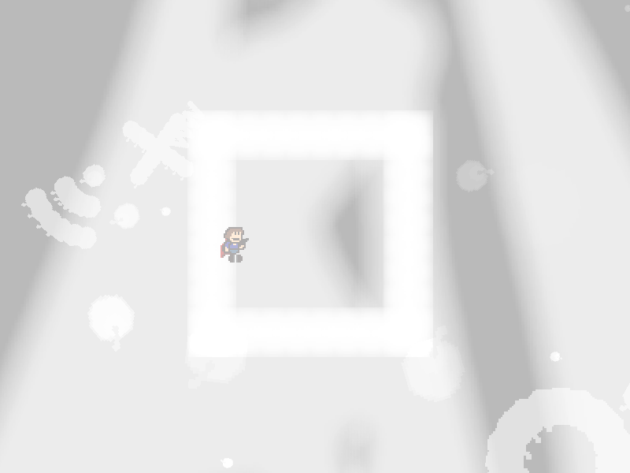

chapter9 - section4

| creator | segment | label | jump |
|---|---|---|---|
| NN | 2:07.80~2:09.50 | Q+R*A | infinite |
軌道が交差するときの半径と角度がランダムな弾幕です。
2:07.80において画面中央を中心として生成される、それぞれの層において透明度が異なる同心円状弾幕に関して、これらは全ての層について同一の軌道を通過します。
半透明の円形弾幕が通過する軌道（fig.9-4.1.a, fig.9-4.1.b）から、2:08.60において同心円状弾幕のうち最も内側の円形弾幕が加速した際に生まれる空間（fig.9-4.2）を予測することを目的としています。



なお、9-4終了時点で画面中央に形成される四角形領域の内側に滞在している必要があります（fig.9-4.3）。
